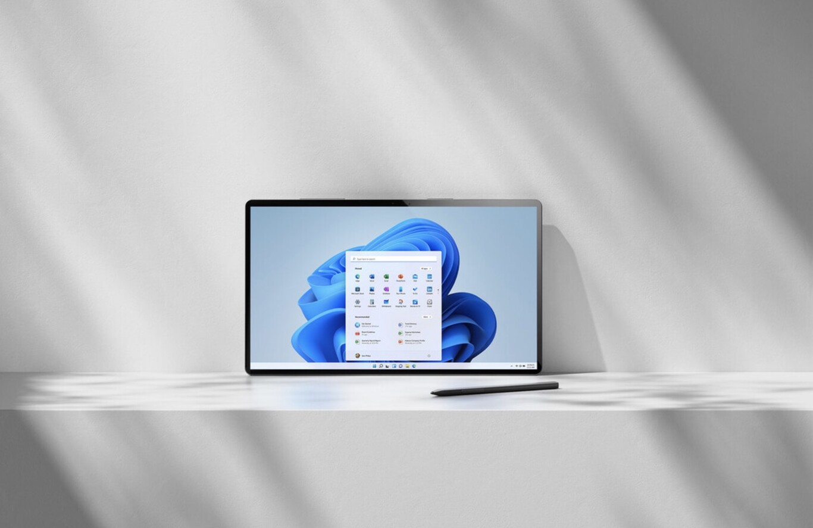
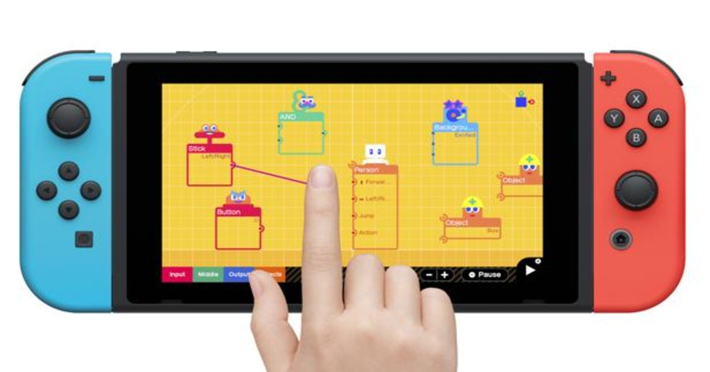
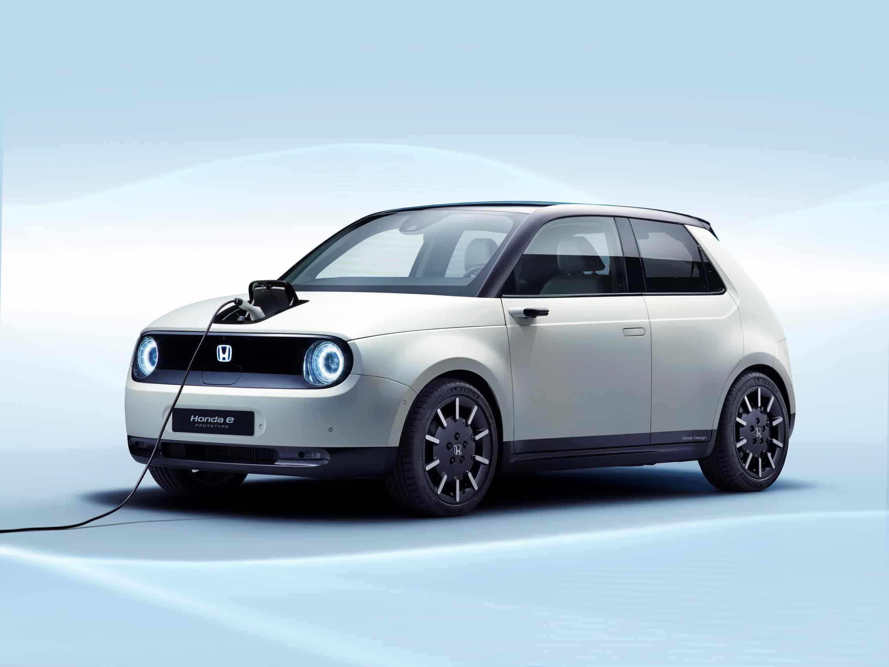

Windows 11
Windows 11 ya es, prácticamente, una realidad. Como prometió ayer Microsoft durante su presentación, el nuevo sistema operativo para equipos de la compañía será completamente gratuito y estará disponible para su instalación a finales del presente 2021. Sin embargo, como suele ocurrir en el campo del software, quedan dudas sobre los equipos que serán compatibles con esta nueva versión.
Con el objetivo de que el usuario sepa si va a poder hacer uso de Windows 11, Microsoft ha compartido ha creado una aplicación que permite salir de dudas. La herramienta recibe el nombre de PC Health Check y, al igual que el sistema operativo, es completamente gratuita. Está disponible actualmente para descarga desde la página web de la empresa.

Especificaciones mínimas
Más allá de esta 'app', la tecnológica ha compartido las especificaciones mínimas que debe tener un ordenador para poder instalar Windows 11. Evidentemente, las exigencias son mayores que con el anterior sistema operativo, Windows 10, por lo que existe la posibilidad de que tengas que cambiar de equipo si quieres pegar el salto al nuevo software de la empresa.
De este modo, el procesador debe ser de 1 GHz o más rápido con 2 o más núcleos, ser de 64 bits compatible o sistema en un chip (SoC). La RAM debe alcanzar, como mínimo, los 4 GB, mientras que el almacenamiento interno debe ser, al menos, de 64 GB.
La tarjeta gráfica debe ser compatible con DirectX 12 / WDDM 2.x. La pantalla debe tener, como mínimo, 9 pulgadas y contar con resolución HD. Asimismo, en lo que se refiere a la conexión a Internet necesitarás tener una cuenta de Microsoft.

Nintendo apuesta por los videojuegos exclusivos
Nintendo baila sola. A diferencia de su competencia directa, la firma de Kioto no tiene prisa por anunciar una nueva consola con la que competir dentro de una nueva generación que, por el momento, se está viendo lastrada por la escasez de semiconductores. Hasta la fecha, la firma nipona tampoco se ha mostrado muy interesada por las opciones del juego en 'streaming' y la multiplataforma; que es, precisamente, donde muchas tecnologías ven el futuro dentro del sector del videojuego.

Mucho se habla de Nintendo Switch Pro estos días, cuando lo cierto es que no hay anuncio oficial que valga y todo lo que se publica sobre la posible sucesora de la generación actual está basado en rumores más o menos fundados. Por ejemplo, esas especificaciones tan bestias, que tanto cuesta creerse.
Sin embargo, de estar próximos a una actualización de la consola híbrida de la compañía nipona, sí es de esperar que Nintendo Switch Pro, de llegar a existir, mejore sus capacidades hasta un mínimo y se suba al carro de determinadas tecnologías que son tendencia y que en los años que vienen marcarán el desarrollo de los juegos más populares.
Sin ponernos a hacer cábalas acerca de los componentes que traerá -o que podría traer- Nintendo Switch Pro, básicamente porque de desconoce por completo, hay quien se ha aventurado a ofrecer un fogonazo al respecto, mostrando una simulación de cómo se verían algunos de los éxitos de Nintendo Switch en la supuesta Switch Pro.

Honda finalmente anuncia su primer vehículo eléctrico, que llegará en 2024
Honda anunció su primer vehículo totalmente eléctrico, el Prologue, el lunes.
Programado para llegar a principios de 2024, el SUV estará equipado con la plataforma de batería Ultium de General Motors, que también se utilizará en el próximo supertruck y SUV GMC Hummer EV .
El Prólogo ayuda a Honda a acercarse a su objetivo de vender solo vehículos de cero emisiones en América del Norte para 2040. Acura, la marca de lujo de Honda, también lanzará un SUV eléctrico en 2024, su primer vehículo eléctrico.
Actualmente, Honda solo ofrece opciones híbridas e híbridas enchufables, como Insight y Clarity, respectivamente. Después de 2024, Honda planea lanzar su propia línea de vehículos eléctricos separada de la asociación con GM.